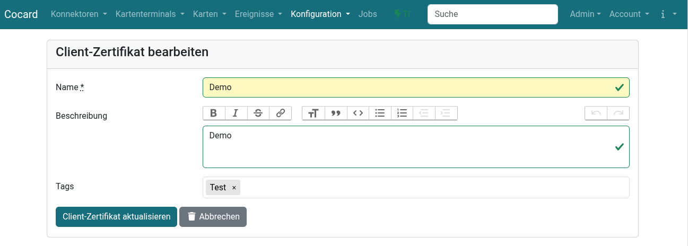

Zertifikat anlegen/bearbeiten
Über importiert und legt man ein neues Client-Zertifikat in Cocard an. Client-Zertifikat und Private Key müssen dabei im PEM-Format vorliegen. Das Zertifikat kopiert man dann einfach mit Cut-and-Paste in das Formularfeld.
Wichtig: unbedingt -----BEGIN CERTIFICATE----- und -----END CERTIFICATE-----
mit kopieren.
Den Private Key kopiert man analog dazu in das vorgesehene Feld. Der Private Key sollte passwortgeschützt sein, da jeder mit Admin-Rolle den Key aus Cocard wieder heraus kopieren kann.

| Ein Import über eine PKCS12-Datei ist derzeit noch nicht möglich, aber für ein zukünftiges Release vorgesehen. |